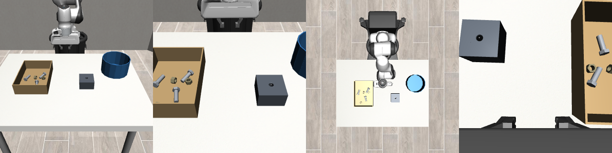

A Panda with a tactile Franka Hand sorts ISO M16 bolts into a 17 mm hole and M16 nuts into a bucket. The question: where do joint torque and fingertip touch actually help a learned policy?
74.8 % vs 56.2 %TD3+BC insertion with vs without force (p = 0.0005)
28.8 % vs 6.8 %imitation (BC) insertion with vs without force
99 % vs 99.6 %picking: no difference, already at the ceiling
≤ 1 / 10full sorts with learned skills chained
The setup

Front and wrist cameras. Parts: ISO 4017 M16×50 bolts (118 g), ISO 4032 M16 nuts; fixture hole Ø 17 mm with a 1 mm chamfer (0.5 mm radial clearance).
Touch: each finger pad is a 4×4 grid of taxels (4 mm pitch) plus a pad force sensor.
Joint torque: τext = τJ − (M q̈ + bias) per joint, with noise and a per-episode bias, as on a real Panda.
Bolt presentation: bolts stand head-up in a rack (opt-in). Dropped loose in the tray, even the scripted expert managed only ~58 % of parts; with the rack it sorts 47 of 50 unseen episodes.
Skills: pick (grasp and lift a part) and insert (find the hole from a noisy estimate and push the bolt 8 mm in), each trained with and without the 15 force/touch channels.
Where force helps
Mean success over training seeds, 50 unseen set-ups per seed, seed-level bootstrap 95 % interval.
skill · learner
with force
without force
seeds
Welch p
Insert · TD3+BC · centred grasps
74.8 % [67.4, 80.4]
56.2 % [51.6, 60.2]
10 + 10
0.0005
Insert · TD3+BC · bolt off-centre in hand
62.0 % [56.0, 68.0]
52.7 % [47.7, 57.7]
6 + 6
0.06
Insert · imitation (BC) · off-centre
28.8 % [26.4, 30.8]
6.8 % [4.0, 10.0]
5 + 5
< 0.0001
Pick · TD3+BC · held and lifted
99.0 % [98.0, 99.8]
99.6 % [99.0, 100]
10 + 10
0.27
Pick · TD3+BC · centred grasp required
48.7 % [42.3, 54.7]
43.0 % [36.7, 48.3]
6 + 6
0.26
Force earns its keep where contact carries the information: finding the hole. Without it the agent searches blind and times out (TD3: 170 vs 58 timeouts in 500 episodes; BC: 229 vs 174 in 250).
with forcewithout force
TD3+BC insertion: held-out success during training, mean of 10 seeds per condition. Both start from the same 100 demonstrations; the force runs keep improving as the behaviour-cloning weight decays, the force-blind runs stall near 40–50 %.
In motion
Scripted expert, one episode: three bolts from the rack into the hole (each vanishes 1 s after seating), three nuts into the bucket. 72 s of sim time, shown at 2× speed.TD3+BC insertion on the same set-ups: with force (left pair of views) and without (right). Top row: force inserts, the force-blind policy searches until it times out.
What did not work
Whole-task imitation never reached a part. ACT and SmolVLA trained on 104–460 demos sorted 0–1 of 36–60 parts; the closest approach was 30–35 mm. ACT averages the "which part next" choice into a hover.
Separately trained skills do not compose. The learned pick leaves bolts 3–7 mm off centre and up to 12° tilted; an insert skill trained on centred grasps then fails every time. Training insert on random offsets and rewarding centred picks lifted insertion after a learned pick to 61 % with force (28 % without), but full sorts stayed at 0–1 of 10.
Snapshot detectors plateau below 95 %. "Grasp is stable" reaches ~94–95 % (touch-driven), "tip is in the hole at release" ~91 % (torque-driven).
The TA-SmolVLA torque token is built and tested but not trained: its no-force twin would compare 0 against 0 on the whole task.
Open decisions
1. Rack or tray. Bolts upright in a rack make the expert and the skills work; the tray is still the environment default.
2. Gate reading. The V4 expert gate (≥ 90 %) is met by the expert without its injected human-like noise (47/50); with noise it was 30/50 before the last fixes.
Numbers: docs/stage2/matrix.md · details per experiment: docs/progress/journal.jsonl · lessons: docs/FINDINGS.md.